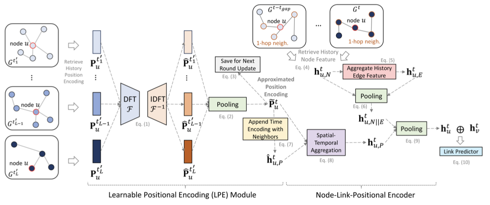
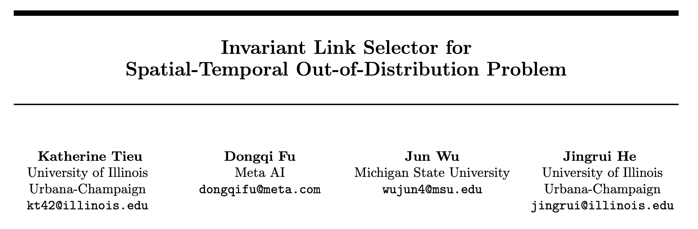
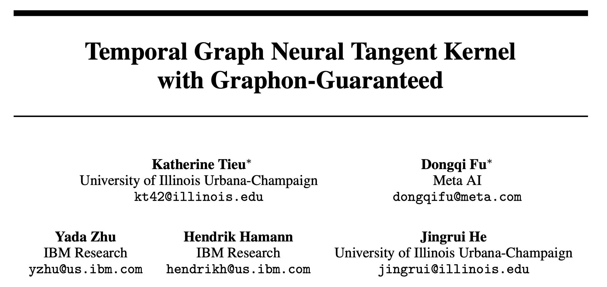

|
Katherine Tieu
I'm a first-year CS PhD of iSAIL Lab at University of Illinois Urbana-Champaign (UIUC), advised by Prof. Jingrui He.
I am interested in (1) LLM post-training, specifically in Alignment and Efficiency; (2) Agentic AI systems, particularly in designing Multi-agent Systems; and (3) Graph Machine Learning, where I had previously worked on temporal graphs.
Email /
Google Scholar /
X (formerly Twitter) /
LinkedIn /
Github
|
|
Publications
(* denotes equal contribution)
|
|

|
Learnable Spatial-Temporal Positional Encoding for Link Prediction
Katherine Tieu*,
Dongqi Fu*
Zihao Li,
Ross Maciejewski,
Jingrui He
ICML, 2025
pdf
/
code
|
|

|
Invariant Link Selector for Spatial-Temporal Out-of-Distribution Problem
Katherine Tieu,
Dongqi Fu,
Jun Wu,
Jingrui He
AISTATS, 2025
pdf
/
code
|
|

|
Temporal Graph Neural Tangent Kernel with Graphon-Guaranteed
Katherine Tieu*,
Dongqi Fu*,
Yada Zhu,
Hendrik Hamann,
Jingrui He
NeurIPS, 2024
pdf
/
code
|
Academic Service
Conference PC Member:
|
|